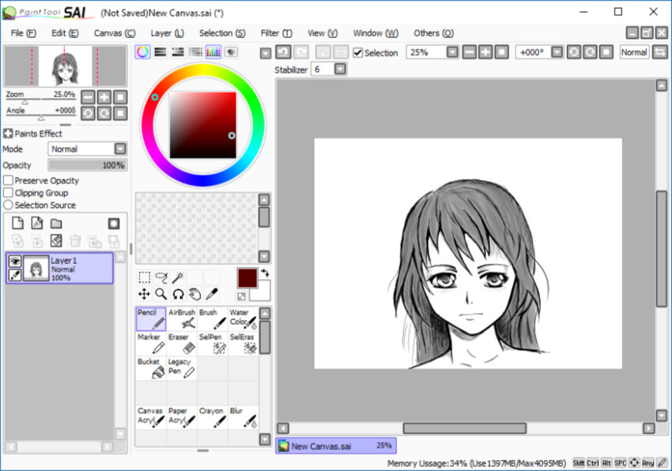
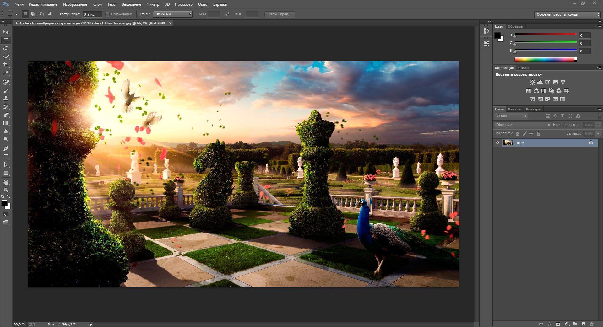

Лучшие программы для создания цифровых рисунков, по моему мнению, в работе с которыми у меня есть опыт:
Ktita
Krita — это настолько продвинутая и функциональная программа для рисования, что не верится, что перед тобой не коммерческий продукт, а разработка с открытым исходным кодом. В этом редакторе есть поддержка слоёв, огромное количество кистей и инструментов, куча самых разных
фильтров и эффектов. Krita может использоваться для создания цифровой живописи, скетчей, картин, комиксов и даже рисованной покадровой анимации. Интерфейс удобно настраивается. Плюс ко всему Krita отлично работает с графическими планшетами.

Разработанный японскими специалистами в области компьютерной графики, Paint Tool SAI является лидером среди графических редакторов для создания потрясающих произведений в стиле манга. Несколько миллионов инсталляций по всему миру говорят сами за себя.
На сегодня, данный графический редактор (на мой взгляд), является очень востребованным у художников независимо от направления их работы и мастерского уровня. Здесь открываются возможности как для продвинутых пользователей, так и для новичков, ведь разобраться в интерфейсе очень просто. Существует масса уроков, которые лично мне помогли быстрее освоить программу.

Adoble PhotoshopAdoble Photoshop – это самый мощный на сегодняшний день графический редактор. Возможности этой программы охватывают весь спектр различных операций, связанный с графикой, а именно: обработка фотографий, создание собственных рисунков, создание постеров, коллажей, обложек для разной продукции, создание открыток и многое другое.
Photoshop содержит в себе сотни инструментов, тысячи функций и миллион эффектов. Интерфейс в программе простой и понятный в обращении, всегда есть возможность установить множество новых эффектов, кистей, градиентов и узоров, которые сделают Вашу работу красивой и необычной.
Следует отметить, что программа Adobe Photoshop является главным инструментом дизайнеров.
